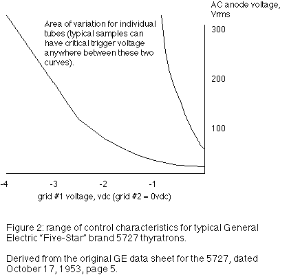

|
Owner, METASONIX, Redwood City, California USA e-mail: synth@metasonix.com Building the All Tube VCO Now we come to the heart of the all-tube synthesizer. And this is one part which enjoys some past history. Please indulge a bit of ranting from me, as this is a most important and much-neglected subject. The VCO presented here is a direct derivative of the original oscillator invented by Friedrich Trautwein in 1932. And it perfectly demonstrates why I'm so cynical about the music world: the Mixtur-Trautonium oscillator was a true VCO, invented at a time when even the Theremin was a new and radical concept. All this shows the academic and popular musical scene at its worst, for if Trautwein had received some encouragement, he and his collaborator Oskar Sala might have persisted with development. And they might have invented the voltage-controlled synthesizer, at a time when Bob Moog and Don Buchla were still sucking on their pacifiers! History might have been very different, if only the average musician were not so stuck in relentlessly rigid thinking. The term "synthesizer" might have appeared, 30 years before it actually did. (Instead, a few instruments were built by Telefunken; Sala did some movie soundtracks; a few composers wrote a few pieces for the Mixtur-Trautonium; and it was basically ignored outside Germany.) Are things so very different today? Even though vacuum tubes are enjoying a considerable surge of popularity in the recording studio, with the electric guitar, and in the home of the audiophile........the electronic keyboardist continues to march grimly forward, hopelessly wedded to whatever the latest digital technology is. This closed mindset seems amazingly like 1932 to me, only distorted in a funhouse mirror. DSP chips have replaced flutes and trumpets. The VCO is simply a relaxation oscillator built around a "thyratron" tube. This device is not a vacuum tube, but contains a tenuous mixture of xenon and other gases. It's an on-off device, having only two operating states. "Thyros" is Greek for "door", so it's a "door tube"; either open or closed. The thyratron dates from the early days of tube technology, and was usually used for simple control functions. The small thyratron used here is the 2D21/5727, originally intended for use in switching small relays on. It is very sensitive, and much of the electronic world we know today originated from the electronic control systems made possible by thyratrons. (Indeed, today's SCR or triac is a "thyristor", simply a semiconductor copy of the thyratron. Larger thyratrons were made for controlling AC motors and other loads.) The 2D21 is very roughly similar in construction to any vacuum amplifier tube. Some details have been changed, since you want the gas to ionize only at the right time. The grids are designed to shield the anode from the hot cathode, until the right set of voltages is seen. The cathode uses different materials from vacuum tubes, since the gas ions can damage a regular oxide-coated cathode. And various wiring connections are coated with high-temperature cement, so that only the anode sees ionization current. There are triode thyratrons and tetrode thyratrons (and even a few pentode thyratrons). The extra grids in the tetrode and pentode serve to further shield the anode from the grid potential. So, the "shield grid" further increases the sensitivity of the tube. To make a thyratron oscillate, simply connect its cathode and control grid(s) to ground; apply a positive voltage greater than 70v to the anode via a resistor; and connect a capacitor from anode to cathode. Presto, a relaxation oscillator, producing a sawtooth-shaped waveform. The frequency is dependent on the RC time constant of the capacitor and resistor, and on the ionization voltage of the thyratron (about 70 volts). It varies from tube to tube, due to manufacturing tolerances. To control the frequency means either changing the R, the C, or varying the grid or anode voltages. It's easiest for us to make a VCO by varying the sensitive grids of our 2D21, so we will drive it with a cathode follower made from half of a 12AT7. This is just a DC amplifier with a voltage gain very close to +1, and a low output impedance. The circuit shown allows a pitch variation of a little over 2 octaves, by varying the input voltage from 0 volts to about 8-10 volts (it varies with the individual thyratron). Note that the AMPLITUDE of the sawtooth decreases as you increase the voltage, and thus the pitch. It's not such a problem over an effective 2 octaves. (Besides, the Mixtur-Trautonium behaved in the same way, and it was good enough for Sala.) Also note that the pitch-versus-CV characteristic is not linear, nor does it follow the much-worshipped volt-per-octave response. It is roughly a square-root curve, which varies from tube to tube. This necessitates controlling the VCO with a keyboard or controller having individual potentiometers for each key or pitch desired, to allow tuning the controller to get equal tempering from the thyratron. This is tedious, but it needs to be done only when a new 2D21 is installed. The tubes are remarkably stable for thousands of hours. Or, one could use a ribbon controller with the VCO, just like the Mixtur-Trautonium. In a later article we'll show a simple controller that you can build for your tube synth. A major side benefit of this scheme--you can easily tune your instrument for microtonal, just, linear, or any other kind of scale within the range of the VCO. Most of you won't believe this, but our thyratron VCO is VASTLY more temperature-stable than ANY solid-state oscillator. No other circuit shows just how temperature-sensitive all semiconductors are. Hit the tube with a heat gun--the pitch will drift a few Hertz. Pump Freon onto it from a can of freeze spray, until it's coated with FROST--the pitch will drift a few Hertz. Try that with any solid-state VCO, and it will stop working altogether, even if it is carefully temperature-compensated! Like it or not, tubes DO have some advantages. If you plan to build more than one VCO, and want to make
The other way is to hard-sync them. This circuit is optional, and works very well. One VCO would act as the master, its output signal would drive the sync inputs of the others. It is a very hard sync indeed--you will need strong modulation CVs to force them out of sync. Our output signal has to be isolated from the next stage, this is done by the 220k resistor and coupling capacitor. This leads to a "drive" volume control, then to an amplifier stage using the other half of the 12AT7. At low settings, the drive signal remains a sawtooth at the output. Turn up the drive and you get a progressively cleaner rectangular wave. The output signal is HOT--more than 100v p-p. Suggest you use it with other tubed processing stages; or divide it down 10-to-1 before going to solid-state circuits, to prevent damaging them. The third tube in our simple VCO is really necessary. It is another lost technology--the gas-discharge regulator tube. This predecessor of the zener diode makes an excellent shunt regulator, a necessity with the thyratron relaxation oscillator (its pitch is very sensitive to variations in the plate voltage supply). Don't believe people who claim that gas regulators are unstable or noisy--many excellent instruments used nothing but, and they performed the job well. Gas tubes of this type routinely last 5000-10000 hours or more. (We could use zeners instead, but the OB2 is stable, reliable, and (unlike zeners) immune to temperature fluctuations.) That's the basics of the VCO. If you are just beginning to experiment with these circuits, build your VCOs just as shown. There are MANY tubes that you could use in these circuits--an octal-base OC3 could be used instead of the OB2; or you could provide a +180v plate supply and use higher-voltage OA2 or OD3 regulators, to get 150v on the thyratron. There is another thyratron that works in this circuit with no modifications, the smaller 5696. Its pitch range is much higher, and it sems to be less "fat" sounding than the 2D21/5727. Many thyratrons were made, from the larger octal-base 2050 and 884 to huge industrial ones with water cooling jackets. Any of them can be used as VCOs, although the tetrode tubes seem to be more sensitive than the triode types. (There are cold-cathode gas thyratrons, such as the OA5 and the 5823. They can be made to work, but I recommend against them, as they are MUCH less stable, more prone to drift with temperature, and possessing shorter lifetime than hot-cathode types.) And the 12AT7 triodes are not the only types that can do the jobs shown. I'll leave that for the more sophisticated homebrewers. Schematics  About the Author Eric Barbour holds a BSEE degree from Northern Arizona University. He has been a regular contributor with GLASS AUDIO magazine since 1991, staff editor of VACUUM TUBE VALLEY magazine since its founding in 1995, and has written articles for many other music and audiophile publications.
Audio Synthesis via Vacuum Tubes Home
A note to readers: this circuitry is intended for the more advanced builder. Because high voltages are used, a shock hazard exists. We do NOT recommend that the novice DIY musician try to construct this synthesizer. Some experience with tube electronics is highly recommended.
|